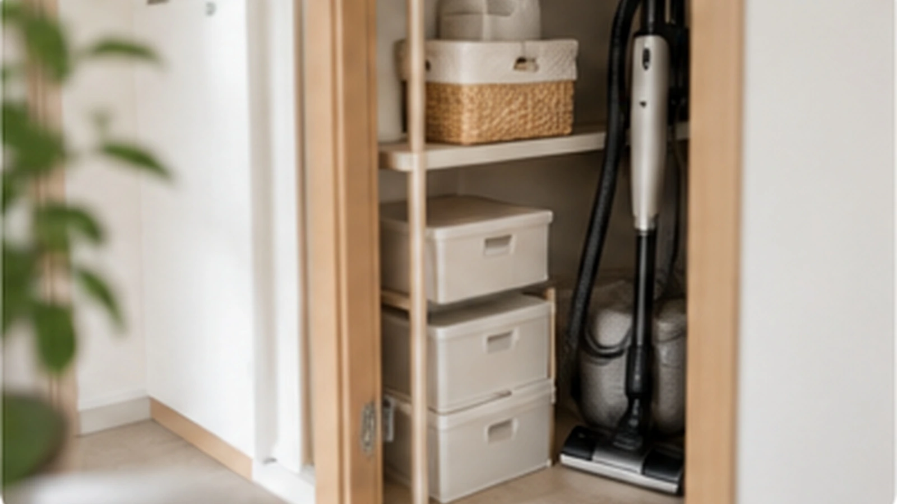
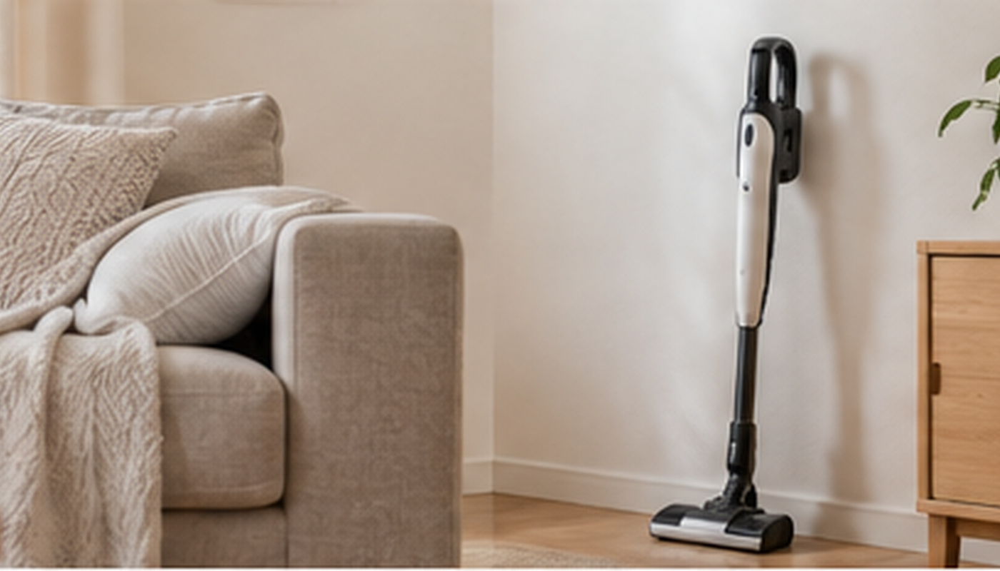
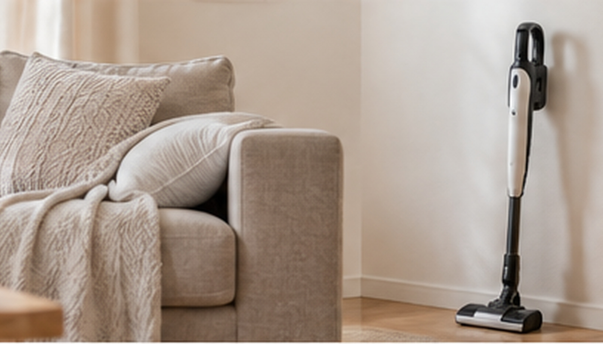

バッグを床に置いてしまう！ラクな置き場所は？
バッグを床に置いてしまうなら、帰宅後の動線上に「置くだけ・掛けるだけ」の定位置を作ると散らかりにくくなります。

結論：バッグ収納は「帰宅して最初に手放す場所」に置く
バッグをクローゼットまで運べないなら、毎日そこへしまう前提をやめても大丈夫です。玄関からリビングまでの動線で、自然にバッグを下ろす場所を定位置にします。
床置きになる理由
帰宅直後は、上着を脱ぐ、手を洗う、買った物を出すなど動作が重なります。その途中でバッグを床に置き、あとで片付けるつもりがそのままになるのは珍しくありません。

ラクなのは「掛ける」か「入れる」
毎日使うバッグなら、扉付き収納よりフックや大きめのかごの方が向いています。
- 壁や家具横のフックに掛ける
- ワゴンの上段へ置く
- 大きめのバスケットへ入れる
- クローゼット入口にバッグ専用スペースを作る
細かく仕切らず、片手で終わる方法を選びます。
中身の補充も同じ場所で
ハンカチやティッシュなどを毎日補充するなら、バッグ置き場の近くにストックを置くと別の場所へ取りに行く手間も減ります。

まとめ
床に置かないよう我慢するより、床へ置く直前の場所に定位置を作る方が簡単です。見た目より「毎日戻せるか」を基準に決めましょう。
チラカランの考え方
頑張る回数を増やすより、頑張らなくても回る仕組みを。